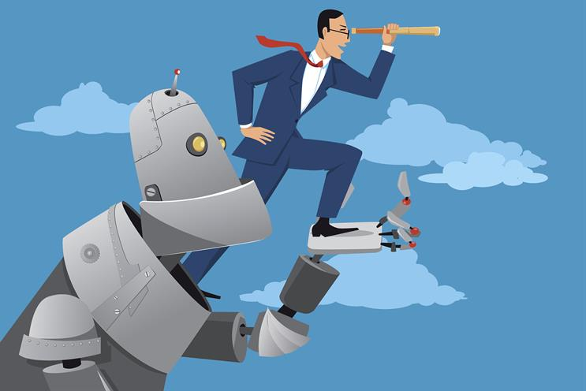

Positive Impacts of Artificial Intelligence
October 7, 2024 by Samantha Samuels
Over the the past few years we have seen the rapid rise of Artificial Intelligence (AI). There have been some positive impacts of AI in various aspects of life. One of these aspects has been enhancing Healthcare delivery. AI has also helped to advance educational tools. AI has also helped to streamline disaster response. AI has also helped to boost agricultural efficiency. AI has also helped to improve environmental conservation.
Along with those AI has helped with enhancing public safety. AI has even fostered Economic Inclusion. In conclusion, AI has had some major impacts on various areas of focus. AI has had major postive impacts on the social, environmental, economical and agricultural sectors.